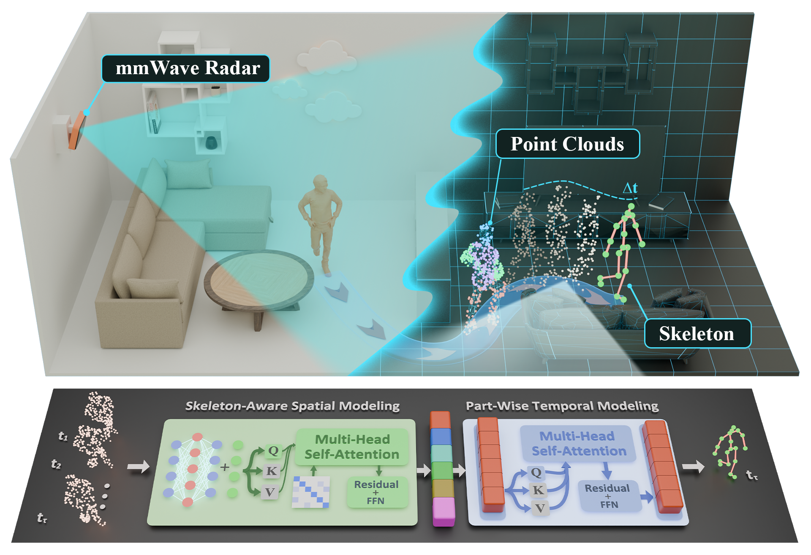

Dense millimeter-wave radar human pose benchmark
mmWave-DensePose
This is the official repository page for the paper Human Pose Estimation of Millimeter-Wave Radar: Prototype, Dataset, and Method. The repository will provide the code, dataset information, benchmark protocol, and pretrained resources for mmWave-DensePose and PAST-Net after cleanup and release preparation.
Abstract
Human pose estimation of millimeter-wave radar
Three-dimensional human pose estimation (3D-HPE) is important for human-centered sensing, but vision-based solutions are limited by privacy concerns, illumination changes, and occlusion. Millimeter-wave (mmWave) radar provides a privacy-preserving alternative, yet existing radar point clouds are often sparse and incomplete, and existing radar 3D-HPE datasets remain limited in subject scale, frame volume, and motion diversity. This paper presents a mmWave radar prototype for dense point-cloud sensing, a large-scale mmWave radar dense HPE (mmWave-DensePose) dataset, and a Part-Aware Spatio-Temporal Network (PAST-Net) for radar-only 3D-HPE. Specifically, we design a four-chip cascaded mmWave radar system to generate dense human-related point clouds with its azimuth and elevation resolution being 1.30 degrees and 2.24 degrees, respectively. And the constructed dataset contains 101 subjects, 19 designed motions, large amounts of free motions, and 570,124 valid synchronized frames. Each frame provides a five-dimensional radar point cloud and a 19-keypoint skeleton annotation. The proposed method uses only mmWave radar point clouds as input and Kinect V2 skeletons as ground-truth annotations. Then PAST-Net reorganizes frame-level point-cloud features into skeleton-aware part-token representations and models their temporal evolution through part-wise self-attention, assisting to compensate for weak and incomplete observations in local body regions. Experiments on the proposed benchmark show that PAST-Net achieves an average Mean Localization Error (MLE) of 4.08 cm, reducing the error by 22.14% compared with the other state-of-the-art (SOTA) baseline. Ablation results further confirm the contributions of the proposed modules, including skeleton-aware spatial modeling, part-wise temporal modeling, and radar-specific point attributes. These results demonstrate that the designed mmWave radar prototype and the proposed method provide an effective sensing basis for privacy-preserving and fine-grained 3D-HPE.
Dataset
Synchronized radar, skeleton, and image frames
The mmWave-DensePose dataset is constructed from synchronized radar and Kinect V2 recordings. It is a dense millimeter-wave radar point-cloud benchmark for radar-only three-dimensional human pose estimation.
141 sequences
Continuous motion recordings
164 points
Mean valid radar points per frame
Kinect V2
Ground-truth skeleton annotation source
4.08 cm
PAST-Net average MLE in current benchmark
Interactive sample viewer
Radar point cloud, skeleton, and synchronized images
Default point rendering
Playback 6.5 FPS
Method
PAST-Net prediction pipeline
PAST-Net uses temporal radar point-cloud windows in a many-to-one prediction setting. It learns structured part-token representations and regresses the target-frame 3D human pose from radar input only.
Temporal radar window
A temporal window of radar point clouds is used as input, with the last frame as the target frame.
Point-cloud encoder
A frame-level point-cloud encoder extracts global radar features from spatial, Doppler, and SNR attributes.
Skeleton-aware tokens
Skeleton-aware spatial modeling converts frame features into structured part-token representations.
Part-wise attention
Part-wise temporal modeling captures each part token's evolution across consecutive frames.
3D pose regression
Global and part-level features are fused to regress the 19 3D keypoints of the target frame.
Repository Status
Release in preparation
The code and dataset will be uploaded after they are organized and reviewed.
- Code release
- Dataset release instructions
- Training and evaluation scripts
- Pretrained checkpoints
- Data preprocessing tools
- Benchmark configuration files
- Citation file
Overview
Dataset and PAST-Net
mmWave-DensePose is a dense millimeter-wave radar point-cloud benchmark for radar-only three-dimensional human pose estimation. The public release focuses on two main components:
- A large-scale radar point-cloud human pose dataset.
- PAST-Net, a Part-Aware Spatio-Temporal Network for 3D human pose estimation.
Each synchronized frame contains a 5D radar point cloud and a 19-keypoint skeleton annotation. PAST-Net uses temporal radar point-cloud windows to learn structured part-token representations and regress the target-frame 3D human pose.
Highlights
Main properties
- Large-scale dataset. 101 subjects, 141 continuous sequences, and 570,124 valid synchronized frames.
- Rich motion coverage. 19 predefined motions and additional free-motion sequences.
- Radar-only 3D-HPE benchmark. The model uses only mmWave radar point clouds as input. Kinect V2 skeletons are used as ground-truth annotations.
- 5D radar point representation. Each radar point contains spatial coordinates, Doppler information, and signal-to-noise ratio.
- Part-aware spatio-temporal modeling. PAST-Net reorganizes frame-level radar features into skeleton-aware part-token representations and models their temporal evolution across consecutive frames.
Dataset Table
Release format summary
| Item | Description |
|---|---|
| Dataset name | mmWave-DensePose |
| Sensor input | Dense mmWave radar point cloud |
| Annotation source | Kinect V2 skeleton |
| Subjects | 101 |
| Motions | 19 predefined motions + free motion |
| Continuous sequences | 141 |
| Valid synchronized frames | 570,124 |
| Radar point attributes | x, y, z, Doppler, SNR |
| Skeleton annotation | 19 3D keypoints |
| Mean valid radar points per frame | 164 |
The dataset release will include the data format description, download instructions, preprocessing scripts, and benchmark split information.
Benchmark
Current experimental setting
The benchmark supports both single-frame and multi-frame radar-based 3D human pose estimation.
- A five-frame temporal input window.
- The last frame as the target frame.
- Mean Localization Error (MLE) as the evaluation metric.
- Radar point clouds as the only network input.
- Kinect V2 skeletons as ground-truth annotations.
Main Result
PAST-Net average MLE
PAST-Net achieves the best average MLE among the reproduced and adapted baselines on the mmWave-DensePose benchmark.
| Method | Average MLE |
|---|---|
| PAST-Net | 4.08 cm |
The full per-joint comparison and ablation results will be provided with the paper materials and evaluation scripts.
License, Contact, and Acknowledgement
Release notes
This repository is released under the MIT License.
Dataset access instructions and terms for pretrained resources will be provided with the release materials.
Please do not redistribute any unreleased code, data, or checkpoint files.
For questions about the paper, code, or dataset release, please contact the authors or open an issue after the repository is public.
Corresponding authors and contact information will be updated after publication.
This project is based on synchronized radar point-cloud data, Kinect V2 skeleton annotation, and radar-only 3D human pose estimation. We thank the contributors and participants involved in the data collection and research development.